Portfolio

Move
A transport mobile application that provides a seamless travelling experience for price sensitive travellers by streamlining their decision-making process through integrating various sets of data.

Timeline: 11 weeks
Tools: Figma, Adobe Illustrator, Adobe Photoshop
Project overview
This project prompts designers to make meaningful use of data to improve everyday lives of people. Specifically, designers look into the open data available and use them as design materials.
My team looked into the common frustrations faced by people when travelling from one place to another, analysed the data available for use and brainstormed for features that would improve their travelling experience.
Problem
Transportation is an integral part of our life, but it is not uncommon to encounter various frustrations when travelling. Private hire price surges on rainy days and during rush hour as well as the lack of public transportation after midnight are examples.
Design objective
To design a seamless travelling experience for price sensitive travellers by streamlining their decision-making process through integrating various sets of data.
Quantitative and qualitative survey
A survey was conducted to find out the pain points faced by users.

The team also gathered insights on the ways users are willing to take to save money on travelling.

Below are the relevant data identified for our solution.
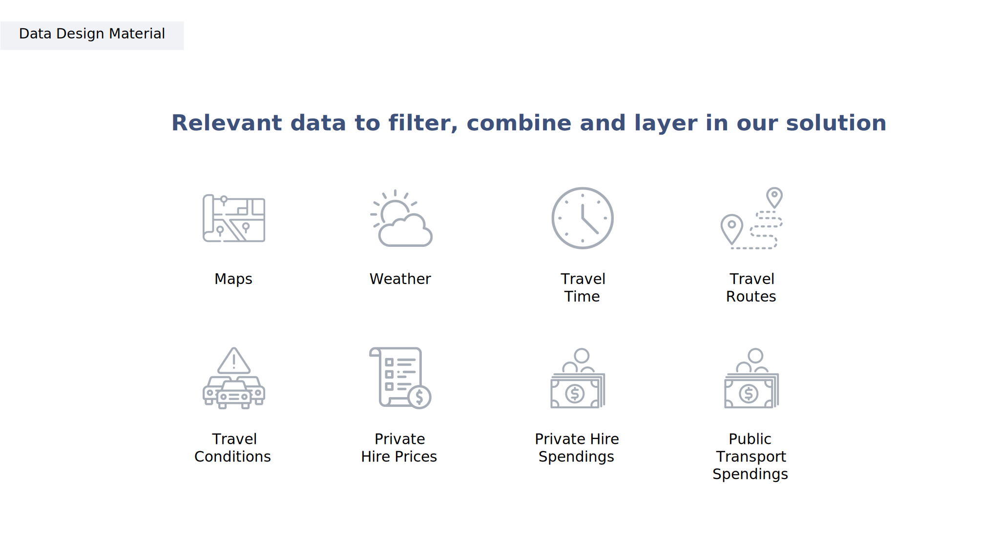We then created paper prototype to test with users and also conducted a co-design workshop to further explore other possibilities in our proposed solution.
Co-design workshop
 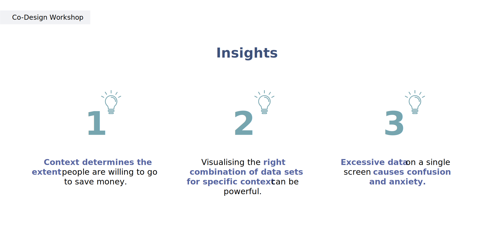
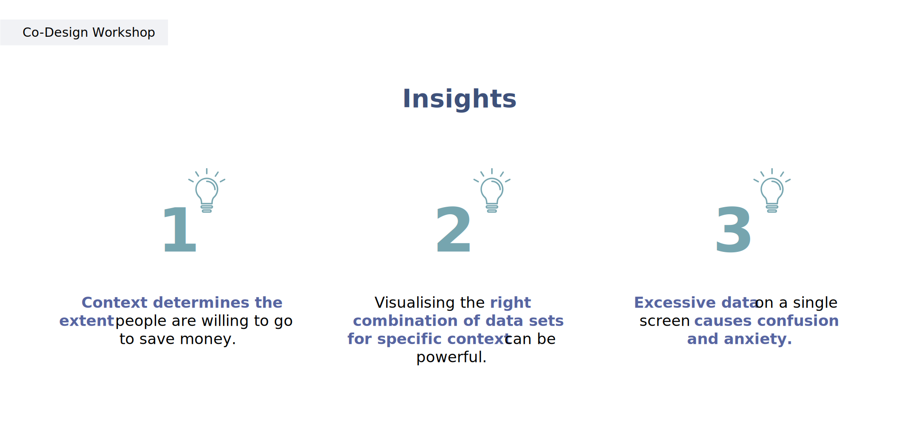
Final concept
Move is a mobile application that integrates data to improve the decision-making process of price sensitive travellers. It compares prices across private hire companies and locates nearby pick-up points offering cheaper rides. The app also uses weather and traffic data to identify price fluctuations and uses users’ travel expenses to give insight into their travel habits.
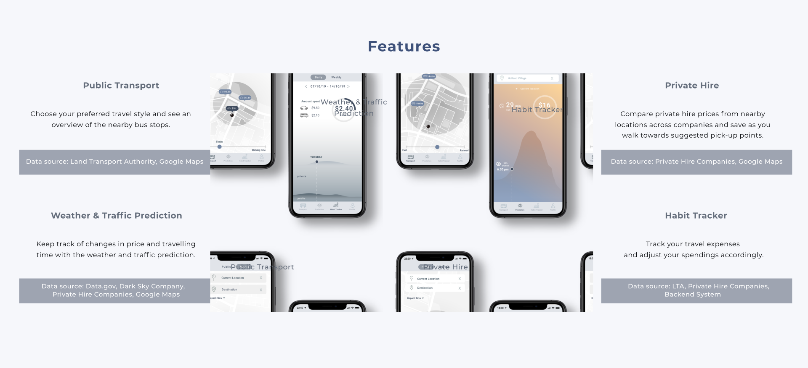 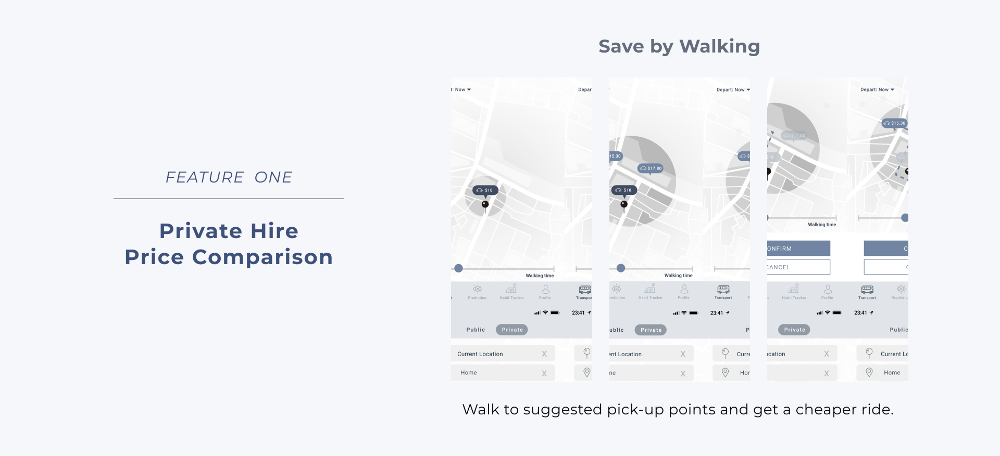 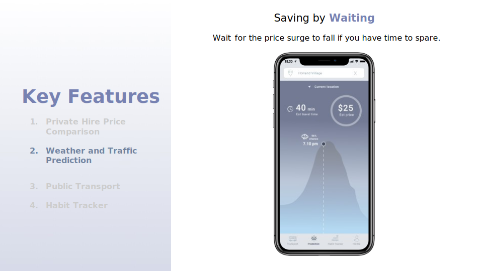 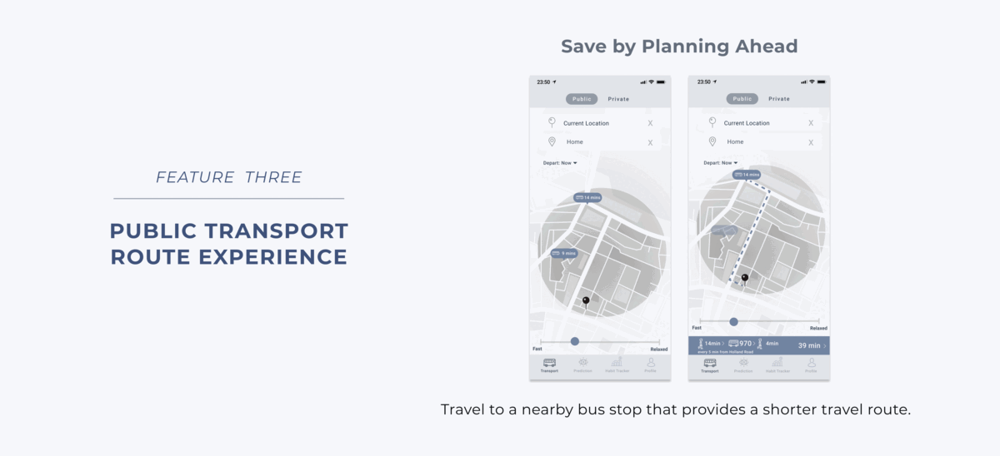 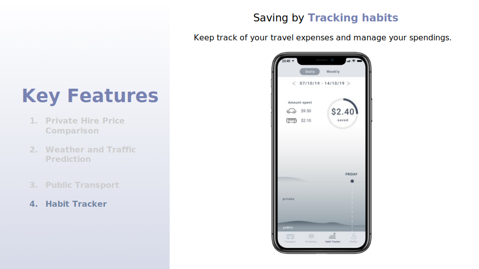Data Ecosystem & Value Exchange Model
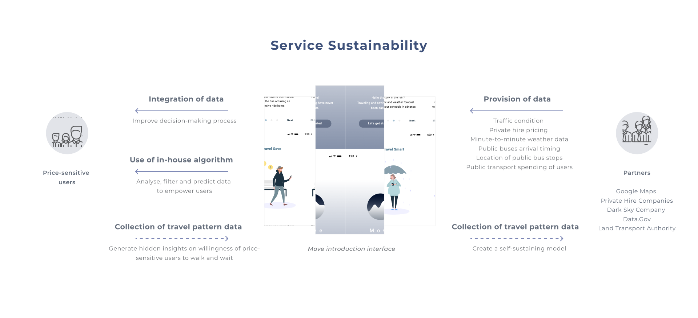Concept validation

Designed with Chan Botter, Felicia Lee & Ng Ai Ling
Tikam
Redesign of a rehabilitative device to increase patients' engagement
and enjoyment while on a rehabilitation journey
Timeline: 13 weeks
Tools: Adobe Illustrator, Adobe Photoshop
Project overview
This project is in partnership with AWWA, a social service agency, to redesign existing rehabilitative devices at the Rehab and Day Care Centre for a more enjoyable and effective rehabilitation journey. Specifically, my team worked on redesigning the Checkerboard, a rehabilitative device used to promote functional standing balance.

Problem
Existing rehabilitative devices focus on restoring mobility and function of patients. However, the activities planned by the therapists have a tendency to become monotonous overtime, resulting in loss of interest and engagement among patients. This in turn lead to caregivers and therapists having to put in continuous efforts to encourage and motivate patients to participate in the rehabilitation program.
Design objective
To redesign a rehabilitative device that provides an engaging and self-guided rehabilitation experience, as well as promotes functional standing balance which includes static balance, forearm range-of-motion and visual scanning abilities.
Ideation
To guide us in our ideation process, we came up with a list of therapy assessment criteria that would determine the level of difficulty of the activity and gamification techniques that would help to increase participant interest and provide a positive rehabilitation experience.

Initial idea 1
Patients are to flip over the modules to guess the picture formed. The difficulty level of the activity is determined by repetition.


User test observations
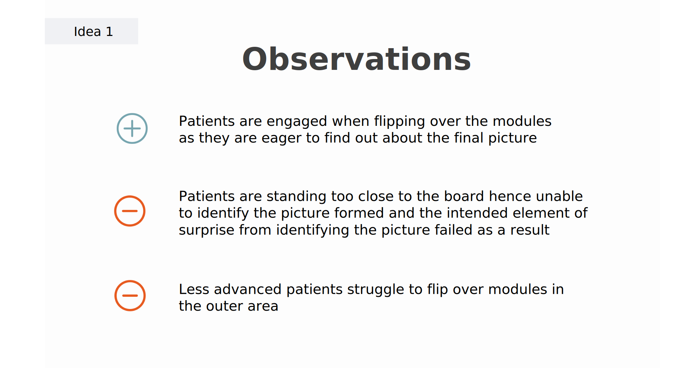User test insights
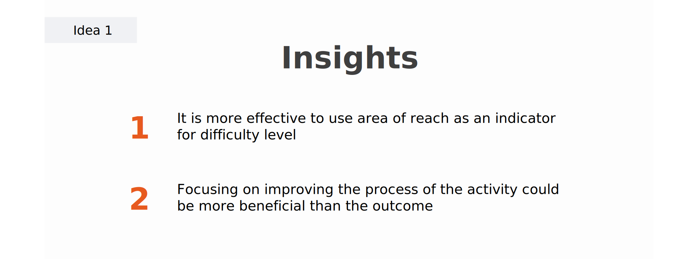Initial idea 2
A narrative around collecting money and purchasing items is introduced as this is a familiar situation for patients. The patient's goal is to flip and find as many green coloured modules to raise money and purchase items for his home. A red coloured module indicates a loss of money and the counter will deduct accordingly to inform users the amount of money collected. Once the target amount has been raised, the game is completed. The difficulty level of the activity is determined by area of reach.
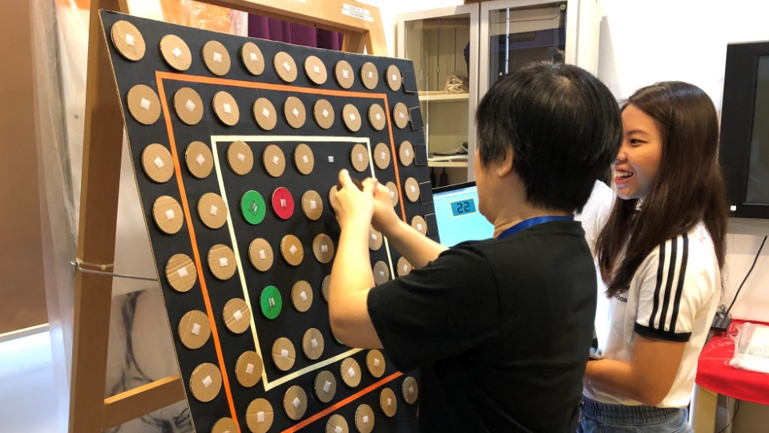User test observations
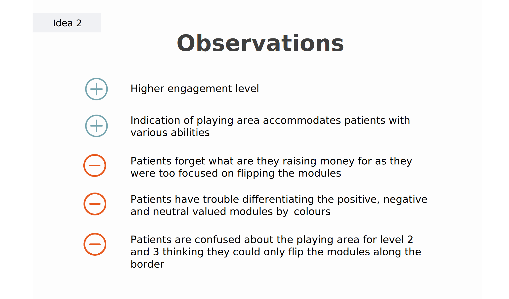User test insights
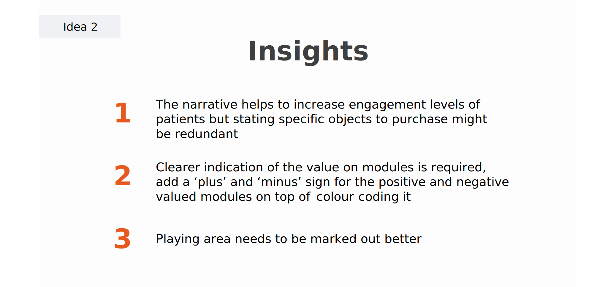Final concept
The name of our final concept, Tikam, means guess in Singlish. Upon selection of the difficulty level, 6 randomly generated number will be shown at the bottom of the device. The goal of the activity is to find all the numbers by flipping over the modules. The difficulty level of the activity is determined by the area of reach.
To ensure that patients are clear on the playing area which depends on the difficulty level, modules within the playing area will be lit up.
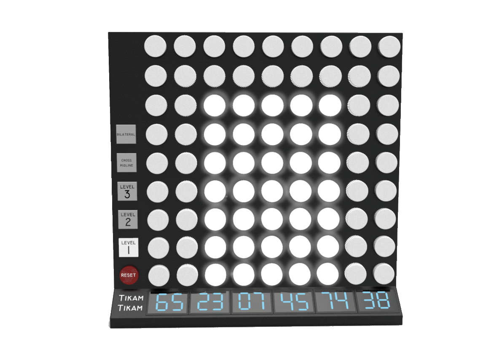When a number has been found, clear feedback is also given to patients by having a border lit up around the number.
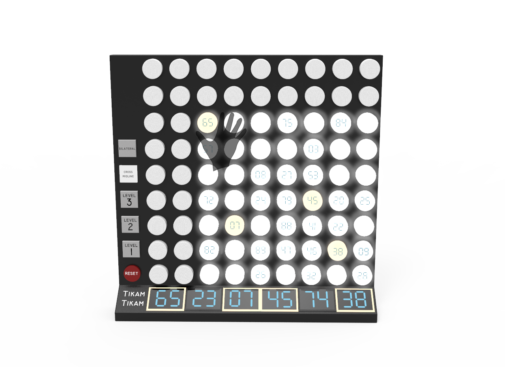Final user test
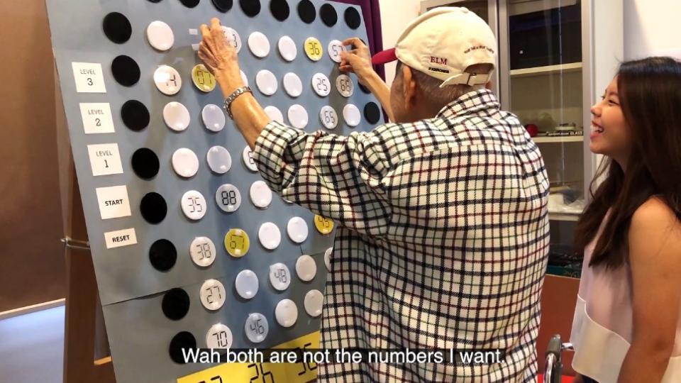Validation

My reflection
Trips to the AWWA Rehab and Day Care Centre for site visits and usability tests always reminded me of my grandmother who was diagnosed with stroke and had to go through rehabilitation at a Rehab Centre. I was fascinated with this opportunity to re-design a piece of rehabilitative device to create a more delightful rehabilitation experience through my design knowing how challenging rehabilitation can get from my personal experience.
Since a rehabilitative device is used by a patient for a prolonged period of time, it is crucial that the newly designed device provides a refreshing experience every time a patient engages with it. While it was challenging at first, I am glad my group combined the gamification techniques and therapy assessment criteria to guide us in our ideation process.
The usability tests were very fruitful although the preparation for the various sessions required a lot of time and effort. I really enjoyed conducting the tests and interacting with the patients. Looking at how the insights from the tests influenced our design decisions to bring the project to success, I am reminded that usability testing is part of the design process that should not be taken lightly.
Designed with Emily Tam & Teh Xin Lei
Assisi Fun Day 2021
Designing the user experience of a virtual canival.
Timeline: 8 weeks
Tools: Lucidchart, Adobe Photoshop
Project overview
Assisi Fun Day is an annual fundraising carnival organised by Assisi Hospice. Since the global pandemic, the annual physical event has turned into a virtual one due to the safety measures put in place. The 11-day long virtual carnival aims to increase outreach and engagement with the public and raise fund for the patients under palliative care.
Design objective
To design a seamless user experience while providing various fun and interactive features such as online games, lucky draw, livestream content and e-commerce.
Design process
I was tasked to create the user flow and design wireframes for both the pre-event and live-event site of the 11-day long virtual carnival. The final iteration of the user flow had over 100 wireframes. I will be sharing the process and challenges for this project below.
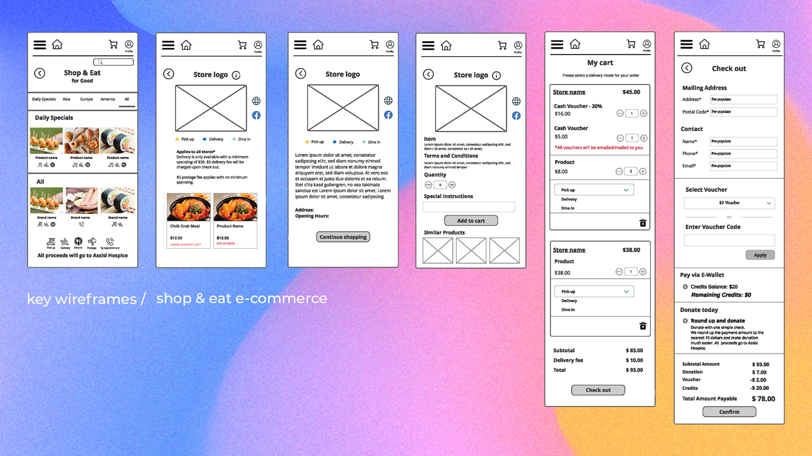The main highlight of this fundraising project is the e-commerce feature. Participating brands are categorised into three continents to fit the theme of the carnival. With various delivery modes made available for each participating brand, icons are used to present them to the users clearly.
When a user is at a ‘add to cart’ page, similar products are recommended to the user to boost sales.
The ‘my cart’ page is slightly tricky as users could be checking out from multiple stores and there would be many details on a single page. The ‘check out’ page is also a complex one that involves voucher input and payment via e-wallet. Hence, I removed any unnecessary information that would overwhelm the users and keep the page sleek-looking.
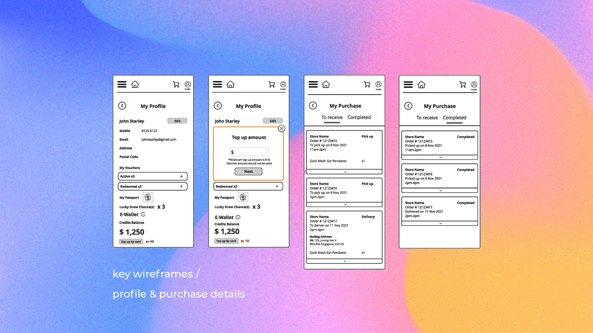The ‘profile’ page is where users keep track of their vouchers, passport challenge progress, lucky draw chances and e-wallet credit balance. They can also top up their e-wallet at this page.
Order status and details of a purchase are shown at the ‘my purchase’ page. The order number on this page is crucial for the reference of both the users and the retailers.
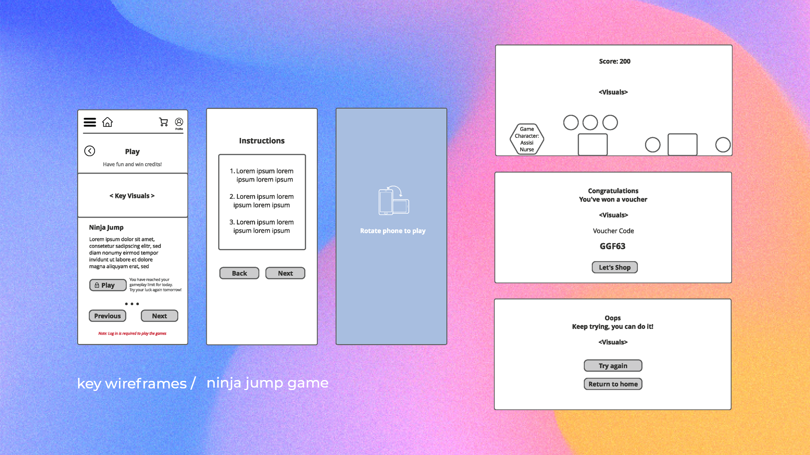Vouchers can be won in this game but users have limited attempts to play each day.
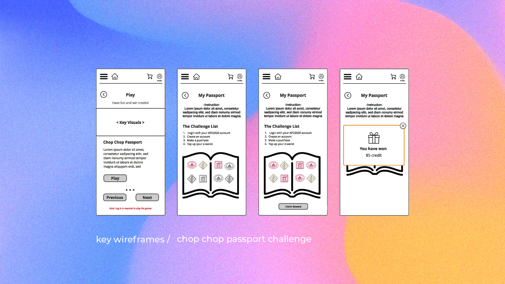Users earn a stamp when they complete a challenge on the list. A reward awaits them after eight stamps have been collected.
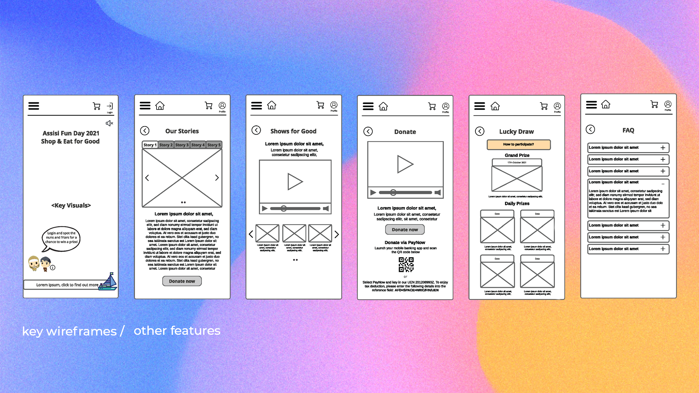The carnival landing page introduces a daily mini game that requires users to explore the site. By spotting the nuns and friars placed on the site, users are rewarded with a lucky draw chance.
Various curated content are also part of the virtual carnival to engage the public and create awareness with the stories of patients under palliative care. The call-to-action ‘donate’ button is placed strategically at the bottom of ‘our stories’ page.
Due to the tight timeline and complexity of the project, I collaborated with the user interface designer and software engineers regularly to ensure they are updated with the latest version of the user flow and wireframe while discussion with the client takes place concurrently.
My reflection
I was very excited to be part of Assisi Fun Day 2021 as the user experience designer and contribute to Assisi Hospice beyond my identity as a volunteer. The experience was enriching as I had the opportunity to be involved in discussions with the client and understand their requirements for the different features on the site. There was a pre-event and a live-event site so I ended up designing over 100 wireframes for this project.
The most complex part of this project was designing for the e-commerce. There were a lot of requirements to consider in order to create a smooth and pleasant e-commerce experience for both the retailers and the consumers. For instance, I had to prioritise the information presented on the screen to ensure that retailers were able to keep track of the purchases made by the consumers easily and consumers were updated of their order status without being overwhelmed. The check out page also had to be designed meticulously to avoid confusing users as there were functions like voucher redemption, e-wallet payment and a donate option all on a single page.
One of the key takeaways from designing the user experience for both the pre-event and live-event sites is that the pre-event site is more than removing features that will only be launched on the live-event site. Instead, the design focuses on allowing users on the pre-event site to gain a sneak peek and anticipate for the live-event.
Designed at Trinax, 6-month UI/UX Internship